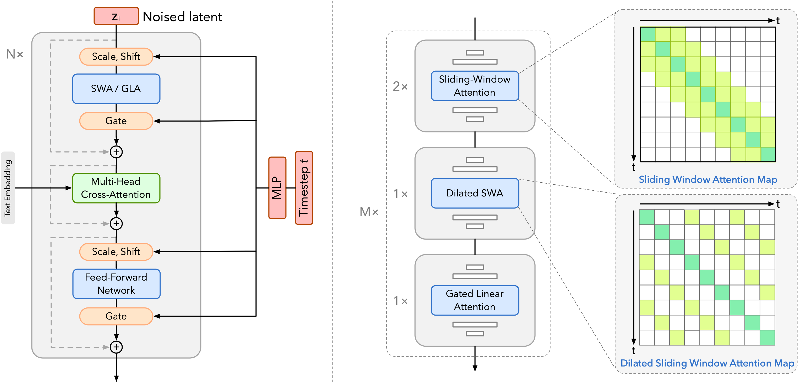

Kairos-3.0 World Model
A Pure Temporally-Linear DiT Architecture
We replace standard quadratic temporal attention with a hybrid design composed of linear- and local-attention mechanisms. This enables efficient modeling of long video sequences while maintaining strong temporal coherence and causal reasoning ability.
